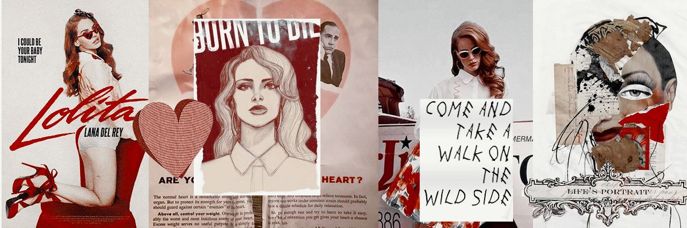

Logo
home
Biografia
Musicas
Álbuns
Lana e seu universo
Contato

Faixas mais ouvidas
TOP 5
Video Games
400 milhões de reproduções
Summertimes Sadness
500 milhões de reproduções
Say Yes To heaven
50 milhões de reproduções
Born to die
500 milhões de reproduções
Cinammon Girl
200 milhões de reproduções